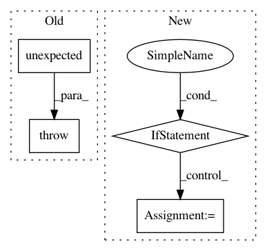

f19c4f5cfecdccd65a65f298fd26f17b9d21ad52,tensorforce/core/models/policy_model.py,PolicyModel,__init__,#PolicyModel#Any#Any#Any#Any#Any#Any#Any#Any#Any#Any#Any#Any#Any#Any#Any#Any#Any#Any#Any#Any#Any#Any#Any#Any#Any#,30
Before Change
):
// Policy internals specification
if (policy is None) == (network is None):
raise TensorforceError.unexpected()
policy_cls, first_arg, kwargs = Module.get_module_class_and_kwargs(
name="policy", module=policy, modules=policy_modules, states_spec=states,
actions_spec=actions, network=network
)
After Change
// Policy internals specification
// if (policy is None) == (network is None):
// raise TensorforceError.unexpected()
if network is None:
policy_cls, first_arg, kwargs = Module.get_module_class_and_kwargs(
name="policy", module=policy, modules=policy_modules, states_spec=states,
actions_spec=actions
)
else:
policy_cls, first_arg, kwargs = Module.get_module_class_and_kwargs(
name="policy", module=policy, modules=policy_modules, states_spec=states,
actions_spec=actions, network=network
)
if first_arg is None:
internals = policy_cls.internals_spec(name="policy", **kwargs)
else:
internals = policy_cls.internals_spec(first_arg, name="policy", **kwargs)
In pattern: SUPERPATTERN
Frequency: 3
Non-data size: 4
Instances
Project Name: reinforceio/tensorforce
Commit Name: f19c4f5cfecdccd65a65f298fd26f17b9d21ad52
Time: 2019-06-13
Author: alexkuhnle@t-online.de
File Name: tensorforce/core/models/policy_model.py
Class Name: PolicyModel
Method Name: __init__
Project Name: reinforceio/tensorforce
Commit Name: b23d308a30d8986bdbb66b54320c8d0ac6a457d4
Time: 2019-12-02
Author: alexkuhnle@t-online.de
File Name: tensorforce/util.py
Class Name:
Method Name: deep_disjoint_update
Project Name: reinforceio/tensorforce
Commit Name: 8b61a18641fdaa14601d0ed2e3337c8ee7b65f7c
Time: 2020-03-22
Author: alexkuhnle@t-online.de
File Name: tensorforce/core/networks/network.py
Class Name: LayerbasedNetwork
Method Name: internals_spec